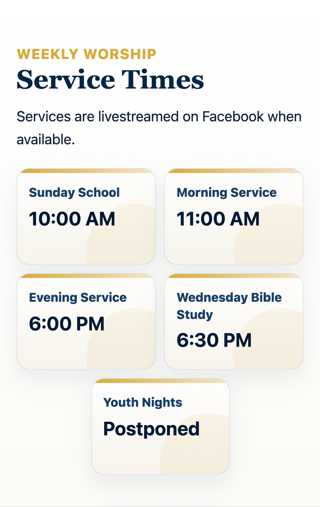
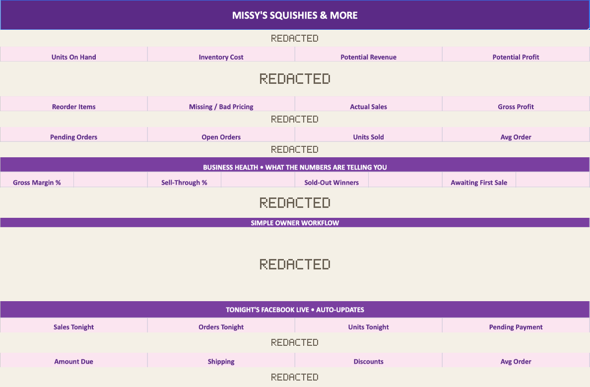

Client projects & design examples
Our Work
See what each client needed, what we built or improved, and the work itself. Design examples are labeled separately.
01 / Client website · Local profile
Eastland First Church of God
Service times, ministries, messages and visitor information in one place the church controls.
Visit the live website (opens in a new tab)Read the Eastland project story Website, local profile & ongoing work

The complete service-times section from Eastland’s public website, shown at a phone viewport.
Actual public website · November 5, 2026Project overview
From a Facebook-first presence to a clear digital front door.
Visitors needed a central source for church information and clear ways to take the next step.
- 01
Challenge
Facebook was the primary online presence. Important visitor information was fragmented and difficult to find.
- 02
Assessment
We mapped the visitor journey and identified gaps in mobile usability, information structure, search visibility, and engagement.
- 03
Improvement
We built a mobile-first website that organized essential information and created clearer paths to visit, watch, give, and connect.
- 04
Current experience
The responsive site works on phone and desktop, with service information, visit planning, ministries, messages, directions and contact details together.
See the work on the live site
Rogers Holdings helped Eastland First Church of God establish its Google Business Profile, built its current custom website, and continues to maintain and update the site.
Current website example; no attendance, engagement or donation results are claimed.
Related service: Small Business Website Creation
02 / Client spreadsheet project
Missy’s Squishies and More
One workbook for stock, checkout totals, packing, pickup and shipping.
A custom workbook project, separate from focused repair.
Read Missy’s project story Business need, improvements & redacted dashboard
Built around her business
Custom workbook project, beyond the focused repair offer. Discuss a spreadsheet project or see focused repair terms.

Business need
Missy sells through Facebook Live. Her spreadsheet needed to support both the sale itself and the work afterward: tracking inventory, grouping customer purchases, preparing checkout totals, and organizing fulfillment.
What Rogers Holdings improved
We helped develop a branded Google Sheets system with product dropdowns, price lookups, stock calculations, and order views. The work included inventory cleanup, checkout totals with shipping and discounts, payment and delivery choices, and clearer views for packing, pickup, and shipping. We also improved larger-order readability and added entry checks, formula warnings, and a simple guide.
Follow-up work
Follow-up work expanded connections as inventory grew and restored blocked order displays. Repairs were tested in separate copies, with backups used to protect existing entries.
About the design examples Fictional concepts and an owned startup
Website design examples
Explore the websites.
Fictional concepts and an owned startup project. These examples demonstrate website design; no client results are claimed.